简介
🎉欢迎来到原版模组《更多的合成》主页！
原版模组一般是指使用命令而非mod api来对游戏的可玩性做出修改。自1.13起，原版模组一般以数据包的形式出现。
《更多的合成》是国内论坛最大的原版模组，包括数百种物品、材料、工具、装饰等，以及新的村民交易和空岛系统。该模组无明确的主题，凡是作者认为原版没有而应该有的特性都有可能加入进来。
最新版本为测试版v1.9-m04d17(魔法更新)，支持Minecraft Java版 1.14快照19w12a+。
📦 下载地址
本页面所列内容为1.9测试版本。不建议玩家使用旧版本，同时新版本放出后，旧版本一律不再更新和修复bug。
| 支持的minecraft版本 | Crafting++版本 | 下载地址 | 更新日志 |
|---|---|---|---|
| Minecraft Java版 1.14 | Crafting++ 1.9 | 尚未发布 | 更新日志 |
| Minecraft Java版 19w12a+ | Crafting++ 1.9测试版m04d17 | github | 官方 | 更新日志 |
| Minecraft Java版 1.13.1-1.13.2 | Crafting++ 1.8.4 | github | 官方 | 更新日志 |
🚀 如何开始
下载后，将解压缩后的datapacks文件夹和resources.zip放入.minecraft/saves/世界名文件夹。安装完成后进入游戏即可。
服务端的操作类似，请设置server.properties中resource-pack=home.ustc.edu.cn/~zsxqq/craftingpp/resources.zip，每次更新时请重新计算resource-pack-sha1；或者让玩家自行下载资源包。客户端无需安装数据包。
广告：欢迎加入挼苹果服，QQ群号885244850。
模组入门
大部分合成需使用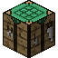合成器。模组需要的附魔之瓶可通过副手持有漏斗获取。
部分参数可通过配置文件datapacks/craftingpp/data/cpp/functions/config.mcfunction修改。模组支持英文、简体中文、繁体中文三种语言。如有任何意见建议，欢迎在论坛回复、发起issue或私信我，请在反馈时提供游戏版本和模组版本。
注意事项
- 转载本页面需遵守CC BY-NC-ND 2.5 CN 许可协议——列出作者(ruhuasiyu@mcbbs)、来源、原始下载链接以及相同的许可协议。
- 使用模组代码需遵守GNU GENERAL PUBLIC LICENSE v3.0协议。
- 转发模组文件不可上传至网盘或文件存储平台，但通讯类工具允许下载后分享。
- 服务器若为公益可直接使用；非公益请先在爱发电支付100元商业服授权费用后再使用。
- 主播或视频制作者若在直播或视频中使用了本模组，请在简介中注明主页、作者名或模组来源。
- 原版模组整合者，该原版模组命名空间为cpp，所有记分板和标签均使用前缀cpp，物品自定义模型区段位于12970000-12979999，修改了minecraft命名空间大部分的战利品表和少量配方与标签。
💖 支持我们
模组的开发需要耗费我们大量时间和精力，如果您想要对我们进行支持，可使用爱发电、微信赞赏、支付宝、bilibili充电对我们进行赞助。您的赞助对我们至关重要，非常感谢您的支持！
👷 制作者名单
数据包设计：ruhuasiyu
资源包设计：ruhuasiyu RubberTree 折君 XeKr 天狼星black MC先生
服务器支持：HerobrineXia SorrowRain 苹果果
平台支持：Minecraft(我的世界)中文论坛 MC百科
赞助名单：一米八微笑 明月庄主 Rhythm萱 LIXIAOGANG 墨鱼 uuu2011 火星浮云 匿名 这是彩虹糖呢 倪采臣 SPGoding ustc_zzzz 苹果果 落天望月 猫君 chyx switefaster
设计过程中亦参考了热力膨胀、植物魔法、深渊国度、潘马斯农场、盐等模组以及Bilibili与Youtube一些视频，CBL小组、TCP小组、CBV小组、MAG小组等小组以及pineapple_、贰逼、ECS、pca、玄素、chyx、zzzz_ustc、乙烯_中国、switefaster、折君、⊙v⊙、Herobrinexia、Amber、匠魂、Gingerbread等玩家亦对此模组有贡献。
感谢以上所有玩家，特别感谢对我们给予赞助的玩家！
索引
自然生成
爬行者地牢 (Creeper Dungeon)
天然生成在主世界的地下y=20附近。与其它地牢类似，爬行者地牢是一个由圆石和苔石构成的小房间，包含苦力怕刷怪箱和地牢宝箱。
与通常地牢不同，爬行者地牢是全封闭的。注意爬行者的爆炸可能会破坏刷怪箱。
附魔室 (Enchanting Room)
天然生成在主世界的陆地地表。附魔室是一个由黑曜石、荧石、空书架、淡蓝色玻璃、地狱砖、附魔台构成的小房间，空书架内含有纸、书、附魔书、指南针、空地图、要塞地图、地牢地图和上古卷轴，并包含一个幻术师。
图腾柱 (Totem Pillar)
天然生成在主世界的陆地地表。图腾柱是一根由各种石砖构成的柱子，中间包含包含矿石、熔岩和宝箱。宝箱含泥土之魂/火焰之星/山脉之肢/附魔金苹果/附魔铁锭/附魔金锭/肉松面包/拔丝苹果/煤炭/骨头/火药/腐肉/线。
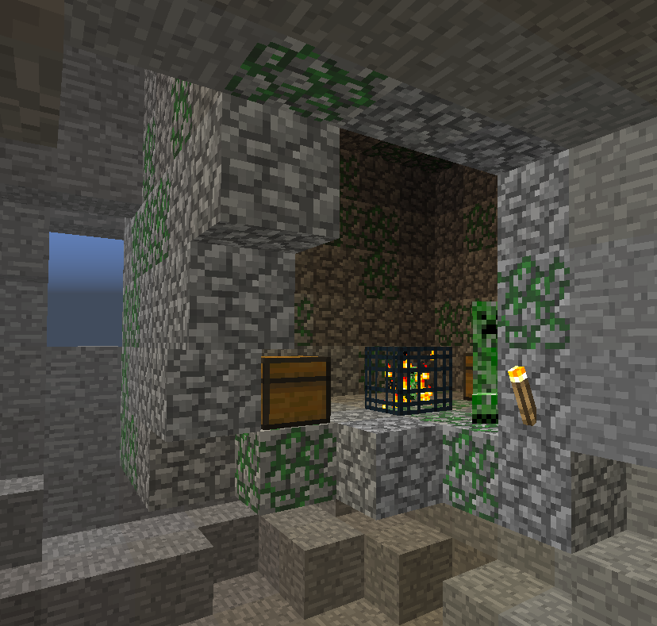 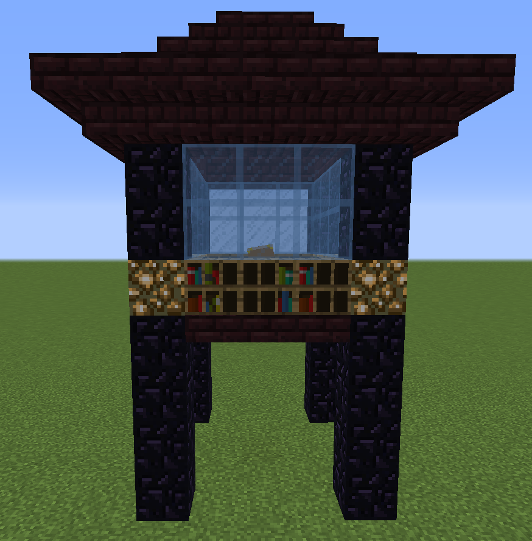 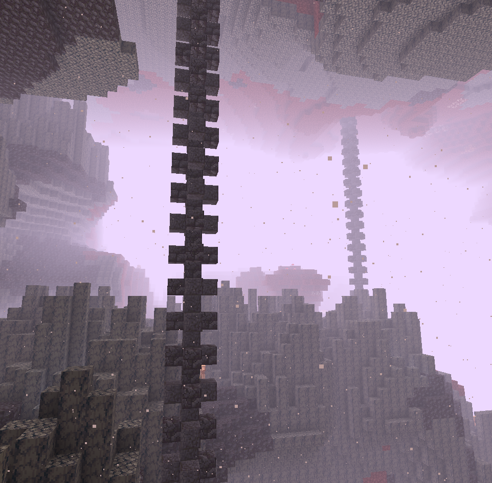水果树 (Fruit Tree)
天然生成在主世界的地表。水果树的形状与桦树相同，树干为橡木。
矿石树 (Ore Tree)
天然生成在主世界的地表。矿石树的形状与桦树相同，树干为云杉木。
羊毛树 (Wool Tree)
天然生成在主世界的地表。羊毛树的形状与桦树相同，树干为桦木。
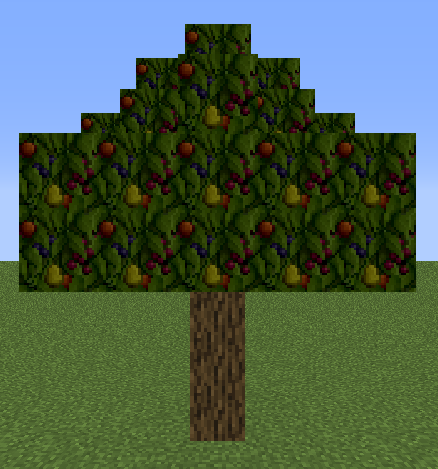 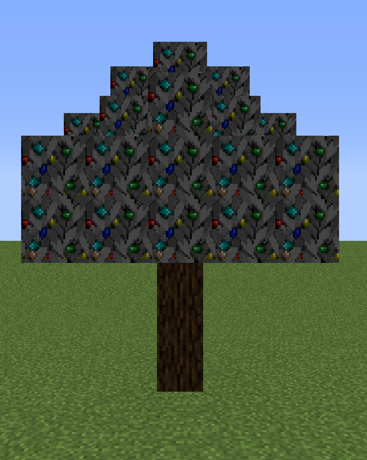
死珊瑚扇 (Dead Coral Fan)
天然生成在沙漠或恶地地表，包含5种死珊瑚扇。
灌木丛 (Small Bush)
天然生成在主世界的地表草方块上，由一块橡木和若干橡树树叶构成。
死云杉树 (Dead Spruce)
天然生成在针叶林地表，由云杉木和若干云杉树叶构成。
农作物 (Field)
天然生成在主世界的地表，为小麦、马铃薯、胡萝卜或甜菜根作物形成的一丛。
花草丛 (Flowers and Grasses Bushes)
天然生成在主世界的地表草方块上，为任意一种花草形成的一丛。
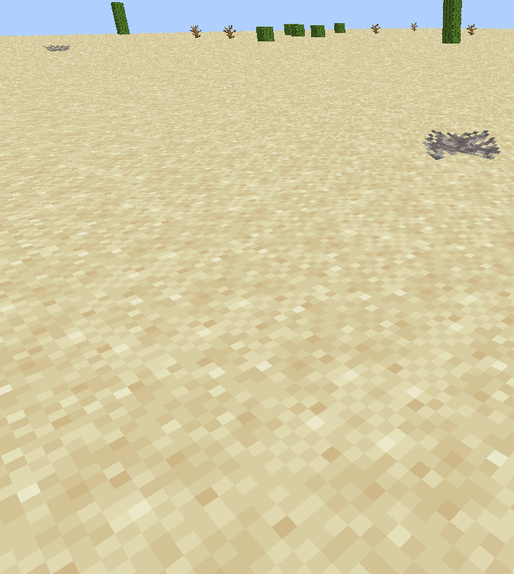 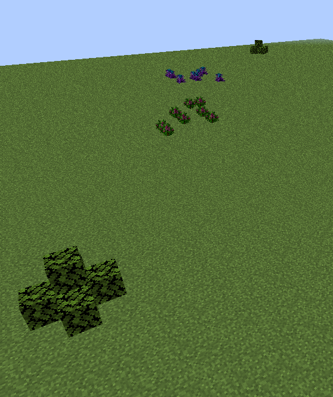 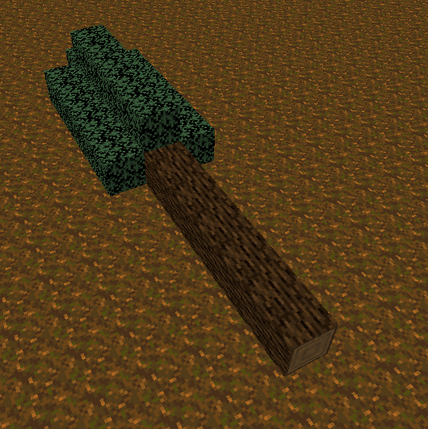 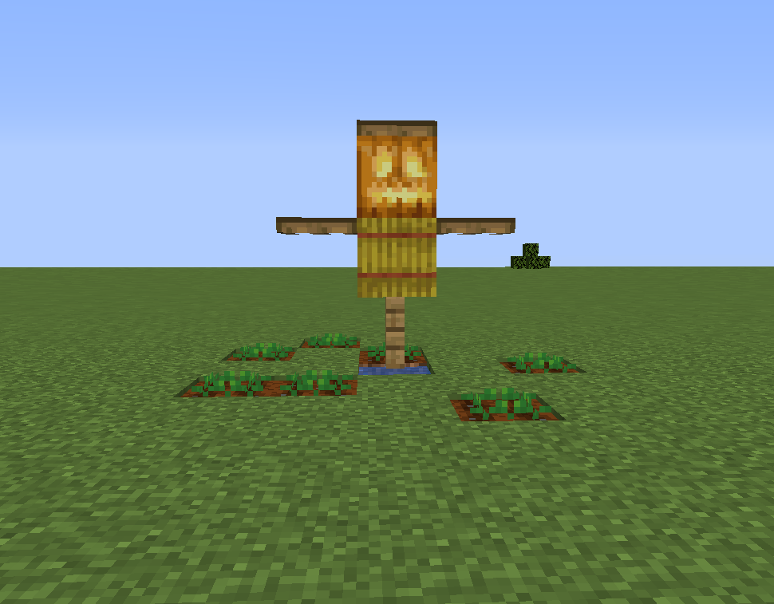 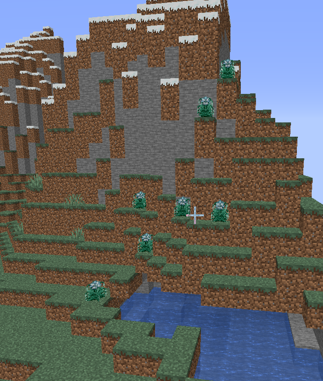实体
怪物加强
- 僵尸：有更高的几率生成时身穿盔甲、手持武器。同时会破坏遇到的火把、灯笼、末地烛和海泡菜。
- 骷髅：有更高的几率生成时身穿盔甲、射出药箭。
- 爬行者：爆炸前的引线时间更短。高压爬行者有一定几率天然生成。

黑暗动物
生成动物时有一定几率生成。黑暗动物头部有黑色颗粒效果，会主攻靠近并攻击附近的玩家。黑暗动物被玩家杀死后掉落黑暗碎片。
| 生物类别 | 攻击方式 | 掉落 |
|---|---|---|
| 黑暗牛 | 凋零、饥饿 | 皮革、腐肉 |
| 黑暗哞菇 | 凋零、饥饿 | 红色蘑菇、腐肉 |
| 黑暗羊 | 凋零、缓慢 | 黑色羊毛、骨头 |
| 黑暗猪 | 靠近后爆炸 | 腐肉、火药 |
| 黑暗鸡 | 凋零、中毒 | 羽毛、线 |
| 黑暗兔子 | 凋零II | 兔子皮、骨头 |

村民
可被附近手持绿宝石块的玩家吸引。
死亡时掉落掉落1~(2+抢夺等级)绿宝石，被玩家杀死时掉落3点经验值。

鸡窝
鸡将要下蛋时会寻找附近的鸡窝，如果没有则会创建一个。鸡必须有鸡窝才能下蛋。鸡死亡后掉落0~1+0.5×抢夺等级个鸡蛋。
钓鱼
有几率掉到宝藏珊瑚、珊瑚扇、湿海绵、鳕鱼头/鲑鱼头/热带鱼头/河豚头、水晶之心和垃圾火药/海晶碎片。
哞菇
哞菇死亡时会将下方泥土变为菌丝。
机器和插件
所有机器可空手开采，但用斧更快。关闭后，界面里的东西会保留，可以使用漏斗输入。强行将物品放入机器背景会导致停机。
合成器 (Crafting Machine)
放置后右击打开并将材料放入左侧3×3的合成方格，若右侧为空，则会自动合成出产物。
| 产物 | 材料 | 合成配方 |
|---|---|---|
| 合成器 | 附魔之瓶+工作台 |
多功能一体机 (All-in-one Machine)
这里绿色背景表示使用合成器合成，下同。
| 产物 | 材料 | 合成配方 |
|---|---|---|
| 多功能一体机 | 附魔铁锭+附魔金锭+熔炉+木桶+泥土之魂 |
默认只能使用常压常温模式。主手持有相应的插件右击即可升级并解锁相应模式，包括：低温插件、低压插件、高温插件、高压插件。
包括上方两个输入槽，下方两个输出槽。右上方为附魔之瓶槽位和经验槽。左侧三个槽位控制压力、温度和输出方向，按Q或Shift+左键切换模式。若输出方向有箱子/潜影箱/陷阱箱/木桶则会自动输出到箱子内。
可以存储至多48点经验，当经验空缺部分达到附魔之瓶经验存储量时，会自动消耗右上方槽位的附魔之瓶来装填。
高温高压
矿石的倍率在模组加载时被确定，玩家可自行测量参数。产出1.6~3.5个对应矿物，红石×5，青金石×6。| 输入 | 输出 | 消耗经验 | 耗时 | |
|---|---|---|---|---|
| 任意两种矿石 | 1.6~3.5对应矿物 | 4 | 10 | |
高温常压
| 输入 | 输出 | 消耗经验 | 耗时 | ||
|---|---|---|---|---|---|
| 铁粉 | 沙子/红沙 | 铁锭 | 20% 煤渣 | 1 | 2.5 |
| 金粉 | 沙子/红沙 | 金锭 | 20% 煤渣 | 1 | 2.5 |
| 碳粉 | 沙子/红沙 | 煤炭 | 20% 煤渣 | 1 | 2.5 |
| 钻石粉 | 沙子/红沙 | 钻石 | 20% 煤渣 | 1 | 2.5 |
| 绿宝石粉 | 沙子/红沙 | 绿宝石 | 20% 煤渣 | 1 | 2.5 |
| 石英粉 | 沙子/红沙 | 石英 | 20% 煤渣 | 1 | 2.5 |
| 硅粉 | 沙子/红沙 | 硅板 | 20% 煤渣 | 4 | 10 |
| 稀土粉 | 沙子/红沙 | 稀土玻璃 | 20% 煤渣 | 4 | 10 |
| 钢粉 | 沙子/红沙 | 钢化玻璃 | 20% 煤渣 | 4 | 10 |
| 玻璃瓶 | 沙子/红沙 | 盐瓶 | - | 4 | 10 |
高温低压
| 输入 | 输出 | 消耗经验 | 耗时 | ||
|---|---|---|---|---|---|
| 酸水 | 地狱疣 | 生物酸 | - | 4 | 10 |
| 碱水 | 地狱疣 | 生物碱 | - | 4 | 10 |
| 石英粉 | 燧石 | 粗硅 | - | 4 | 10 |
| 玻璃瓶 | 活塞 | 空气瓶 | - | 4 | 10 |
| 粗硅 | 空气瓶 | 硅粉 | - | 4 | 10 |
| 粘土 | 盐瓶 | 稀土盐 | - | 4 | 10 |
| 稀土盐 | 生物碱 | 碱性稀土 | - | 4 | 10 |
| 碱性稀土 | 生物酸 | 稀土粉 | - | 4 | 10 |
| 生物碱 | 肥料 | 氨制冷剂 | 煤渣 | 4 | 10 |
常温高压
| 输入 | 输出 | 消耗经验 | 耗时 | ||
|---|---|---|---|---|---|
| 铁矿石 | 燧石 | 2 铁粉 | 10% 金粉 | 4 | 10 |
| 金矿石 | 燧石 | 2 金粉 | 10% 铁粉 | 4 | 10 |
| 煤矿石 | 燧石 | 2 碳粉 | 2% 钻石粉 | 4 | 10 |
| 绿宝石矿石 | 燧石 | 2 绿宝石粉 | 10% 钻石粉 | 4 | 10 |
| 钻石矿石 | 燧石 | 2 钻石粉 | 10% 碳粉 | 4 | 10 |
| 石英矿石 | 燧石 | 2 石英粉 | 10% 荧石粉 | 4 | 10 |
| 红石矿石 | 燧石 | 红石块 | 2~4 青金石 | 4 | 10 |
| 青金石矿石 | 燧石 | 10-20 青金石 | 2~4 红石 | 4 | 10 |
| 铁锭 | 燧石 | 铁粉 | - | 1 | 2.5 |
| 金锭 | 燧石 | 金粉 | - | 1 | 2.5 |
| 煤炭/木炭/煤渣 | 燧石 | 碳粉 | - | 1 | 2.5 |
| 绿宝石 | 燧石 | 绿宝石粉 | - | 1 | 2.5 |
| 钻石 | 燧石 | 钻石粉 | - | 1 | 2.5 |
| 石英/花岗岩/安山岩/闪长岩 | 燧石 | 石英粉 | - | 1 | 2.5 |
| 海晶石 | 燧石 | 3 海晶碎片 | 海晶砂粒 | 1 | 2.5 |
| 海晶石砖/暗海晶石 | 燧石 | 6 海晶碎片 | 2 海晶砂粒 | 1 | 2.5 |
| 羊毛 | 燧石 | 4 线 | 5% 染料 | 1 | 2.5 |
| 粘土块 | 燧石 | 粘液球 | - | 1 | 2.5 |
| 4 圆石 | 燧石 | 4 沙子 | 砂砾或燧石 | 1 | 1 |
| 4 石头 | 燧石 | 4 砂砾或燧石 | 沙子 | 1 | 1 |
| 4 砂砾 | 燧石 | 4 燧石 | 沙子 | 1 | 1 |
常温常压
| 输入 | 输出 | 消耗经验 | 耗时 | ||
|---|---|---|---|---|---|
| 小麦种子 | 肥料 | 2 小麦 | 0~3 小麦种子 | 2 | 2 |
| 甜菜种子 | 肥料 | 2 甜菜根 | 0~3 甜菜种子 | 2 | 2 |
| 胡萝卜 | 肥料 | 6 胡萝卜 | - | 2 | 2 |
| 马铃薯 | 肥料 | 6 马铃薯 | - | 2 | 2 |
| 南瓜种子 | 肥料 | 2 南瓜 | - | 2 | 2 |
| 西瓜种子 | 肥料 | 2 西瓜 | - | 2 | 2 |
| 甘蔗 | 肥料 | 4 甘蔗 | - | 2 | 2 |
| 海带 | 肥料 | 4 海带 | - | 2 | 2 |
| 仙人掌 | 肥料 | 4 仙人掌 | - | 2 | 2 |
| 藤蔓 | 肥料 | 4 藤蔓 | - | 2 | 2 |
| 可可豆 | 肥料 | 4 可可豆 | - | 2 | 2 |
| 蘑菇 | 肥料 | 4 蘑菇 | - | 2 | 2 |
| 地狱疣 | 肥料 | 4 地狱疣 | - | 2 | 2 |
| 睡莲 | 肥料 | 4 睡莲 | - | 2 | 2 |
| 紫颂花 | 肥料 | 2 紫颂果 | 0~3 紫颂花 | 2 | 2 |
| 竹子 | 肥料 | 8 竹子 | - | 2 | 2 |
| 甜浆果 | 肥料 | 8 甜浆果 | - | 2 | 2 |
| 花 | 肥料 | 4 花 | - | 2 | 2 |
| 树苗 | 肥料 | 4 木头 | 0~3 树苗 | 2 | 2 |
| 水果树树苗 | 肥料 | 水果 | 0~3 水果树树苗 | 2 | 2 |
| 矿石树树苗 | 肥料 | 矿石 | 0~3 矿石树树苗 | 2 | 2 |
| 羊毛树树苗 | 肥料 | 羊毛 | 0~3 羊毛树树苗 | 2 | 2 |
| 花草种子 | 肥料 | 花草 | - | 2 | 2 |
常温低压
| 输入 | 输出 | 消耗经验 | 耗时 | |
|---|---|---|---|---|
| 幻翼膜 | 粗制的药水 | 缓降药水 (缓降 8:00) | 4 | 10 |
| 金胡萝卜 | 粗制的药水 | 夜视药水 (夜视 16:00) | 4 | 10 |
| 岩浆膏 | 粗制的药水 | 抗火药水 (防火 16:00) | 4 | 10 |
| 河豚 | 粗制的药水 | 水肺药水 (水下呼吸 16:00) | 4 | 10 |
| 末影珍珠 | 粗制的药水 | 隐身药水 (隐身 16:00) | 4 | 10 |
| 兔子脚 | 粗制的药水 | 跳跃药水 (跳跃提升II 8:00) | 4 | 10 |
| 糖 | 粗制的药水 | 迅捷药水 (速度II 8:00) | 4 | 10 |
| 烈焰粉 | 粗制的药水 | 力量药水 (力量II 8:00) | 4 | 10 |
| 恶魂之泪 | 粗制的药水 | 再生药水 (生命恢复II 1:30) | 4 | 10 |
| 闪烁的西瓜 | 粗制的药水 | 治疗药水 (瞬间治疗III) | 4 | 10 |
| 附魔金锭 | 粗制的药水 | 急迫药水 (急迫II 8:00) | 4 | 10 |
| 附魔钻石 | 粗制的药水 | 抗性药水 (抗性提升II 8:00) | 4 | 10 |
| 鹦鹉螺壳 | 粗制的药水 | 潮汐药水 (潮涌能量 8:00) | 4 | 10 |
| 附魔铁锭 | 粗制的药水 | 连环药水 (连锁 8:00) | 4 | 10 |
低温高压
| 输入 | 输出 | 消耗经验 | 耗时 | ||
|---|---|---|---|---|---|
| 水瓶 | 水果 | 冷饮 | - | 2 | 5 |
| 水瓶 | 氨制冷剂 | 冰 | 氨制冷剂 | 1 | 1 |
| 绿色水之力 (不消耗) | 氨制冷剂 | 冰 | 氨制冷剂 | 1 | 1 |
低温常压
| 输入 | 输出 | 消耗经验 | 耗时 | ||
|---|---|---|---|---|---|
| 熔岩桶 (不消耗) | 圆石插件 (不消耗) | 圆石 | - | 1 | 1 |
| 熔岩桶 (不消耗) | 石头插件 (不消耗) | 石头 | - | 1 | 1 |
| 熔岩桶 | 黑曜石插件 (不消耗) | 黑曜石 | 桶 | 4 | 10 |
低温低压
| 输入 | 输出 | 消耗经验 | 耗时 | ||
|---|---|---|---|---|---|
| 水瓶 | 氨制冷剂 | 雪块 | 氨制冷剂 | 1 | 1 |
| 绿色水之力 (不消耗) | 氨制冷剂 | 雪块 | 氨制冷剂 | 1 | 1 |
交易机 (Trade Machine)
| 产物 | 材料 | 合成配方 |
|---|---|---|
| 交易机 | 附魔铁锭+傀儡+木桶+绿宝石+大地之证 |
包括左侧1个输入槽，右侧2个输出槽。左侧槽位控制输出方向，按Q或Shift+左键切换模式，若输出方向有箱子/潜影箱/陷阱箱/木桶则会自动输出到箱子内。
每次交易获得7点经验值，若输入绿宝石则额外产生7点。当存储的经验值达到附魔之瓶的存储量时，会转化为附魔之瓶输出。
| 输入 | 输出 |
|---|---|
| 4 7 | |
|
4
4
4
8
8
8
8
8
8 8 8 16 16 16 16 16 16 16 16 16 16 16 16 16 16 16 16 16 16 16 16 16 32 32 32 32 32 32 32 32 32 32 32 32 32 32 32 48 48 48 48 48 48 48 48 48 48 48 48 48 48 48 48 48 48 48 48 |
7 |
| 14 |
物品处理机 (Item Processer)
| 产物 | 材料 | 合成配方 |
|---|---|---|
| 物品处理机 | 附魔铁锭+合成器+木桶+红石+熔炉 |
包括左侧方块输入槽，上部工具输入槽，右侧2个输出槽。最左侧槽位控制输出方向，按Q或Shift+左键切换模式，若输出方向有箱子/潜影箱/陷阱箱/木桶则会自动输出到箱子内。
| 工具 | 配方 | 配方 |
|---|---|---|
| 4 | ||
| 9 | ||
| 9 | ||
| 9 | ||
| 9 | ||
| 9 | ||
| 9 | ||
| 9 | ||
| 9 | ||
| 9 | ||
| 9 | ||
| 9 | ||
| 9 | ||
| 9 | ||
| 9 | ||
| 9 | ||
| 9 | ||
| 4 | ||
| 4 | ||
| 4 | ||
| 4 | ||
| 4 | ||
生物投影仪 (Mob Projector)
| 产物 | 材料 | 合成配方 |
|---|---|---|
| 生物投影仪 | 附魔铁锭+刷怪箱+木桶+附魔钻石+生命之灵 |
包括4个输入槽，上方为鸡蛋槽，右上方为附魔之瓶槽。当材料合适时，每隔10秒会在下方两米处生成相应生物。


{kind=link}
{kind=link}
信标增强器 (Beacon Enhancer)
| 产物 | 材料 | 合成配方 |
|---|---|---|
| 信标增强器 | 附魔铁锭+下界之星+木桶+钻石块 |
需放置在信标顶部。左侧可选择对玩家生效的一种效果，右侧可选择对玩家外实体生效的一种效果，最右侧选择负面效果对敌对生物/所有生物生效。影响范围基于下方的信标等级，为半径=10*(等级+1)的球形区域。
若下方为4级信标，每秒恢复64米内玩家1点魔法值，上限60点。若信标矿物块塔的顶层为X形的5个日石和4个月石，则额外每秒恢复128米内玩家1点魔法值，上限100点。

金砧 (Golden Anvil)
| 产物 | 材料 | 合成配方 |
|---|---|---|
| 金砧 | 附魔金锭+铁砧+木桶 |
| 效果 | 输入材料 | ||
|---|---|---|---|
| 移除惩罚等级 | 有惩罚等级的盔甲或工具 | 月之碎片 | 64 附魔之瓶 |
| 移除诅咒魔咒 | 有诅咒魔咒的盔甲或工具 | 附魔金苹果 | |
| 升级魔咒 | 拥有与上古卷轴同等级魔咒的盔甲或工具 | 上古卷轴 | |
| 转移魔咒至书 | 附魔物品 | 书 | |
空书架 (Empty Bookshelf)
破坏书架掉落。拥有三格槽位，外观会随着内部物品数量而变化。若其中恰好放入了三本书，则会自动转变为书架。
空白插件 (Empty Plugin)
| 产物 | 材料 | 合成配方 |
|---|---|---|
| 空白插件 | 纸+红石 |
可用于合成低温插件、低压插件、高温插件、高压插件、圆石插件、石头插件、黑曜石插件。
低温插件 (Low Temperature Plugin)
主手持有右击多功能一体机安装。
| 产物 | 材料 | 合成配方 |
|---|---|---|
| 低温插件 | 附魔之瓶+附魔钻石+附魔金锭+空白插件+雪块+水晶之心 |
低压插件 (Low Pressure Plugin)
主手持有右击多功能一体机安装。
| 产物 | 材料 | 合成配方 |
|---|---|---|
| 低压插件 | 附魔之瓶+附魔钻石+附魔金锭+空白插件+玻璃+天空之翼 |
高温插件 (High Temperature Plugin)
主手持有右击多功能一体机安装。
| 产物 | 材料 | 合成配方 |
|---|---|---|
| 高温插件 | 附魔之瓶+附魔钻石+附魔金锭+空白插件+熔岩桶+火焰之星 |
高压插件 (High Pressure Plugin)
主手持有右击多功能一体机安装。
| 产物 | 材料 | 合成配方 |
|---|---|---|
| 高压插件 | 附魔之瓶+附魔钻石+附魔金锭+空白插件+活塞+山脉之肢 |
圆石插件 (Cobblestone Plugin)
用于多功能一体机低温常压模式下制造圆石。
| 产物 | 材料 | 合成配方 |
|---|---|---|
| 圆石插件 | 附魔之瓶+附魔钻石+附魔金锭+空白插件+附魔铁锭+石镐 |
石头插件 (Stone Plugin)
用于多功能一体机低温常压模式下制造石头。
| 产物 | 材料 | 合成配方 |
|---|---|---|
| 石头插件 | 附魔之瓶+附魔钻石+附魔金锭+空白插件+附魔铁锭+铁镐 |
黑曜石插件 (Obsidian Plugin)
用于多功能一体机低温常压模式下制造黑曜石。
| 产物 | 材料 | 合成配方 |
|---|---|---|
| 黑曜石插件 | 附魔之瓶+附魔钻石+附魔金锭+空白插件+附魔铁锭+金镐 |
掉落物
| 物品 | 来源 | |
|---|---|---|
| 天空之翼 (Wing of Sky) | 蝙蝠/恶魂/幻翼/鸡/烈焰人/恼鬼/鹦鹉被玩家杀死时，有2.5%+抢夺等级×1%的几率掉落。 | |
水晶之心 (Heart of Crystal)
|
| 溺尸/远古守卫者/守卫者/鱿鱼/海龟/海豚/鱼被玩家杀死时，有 | 2.5%+抢夺等级×1%的几率掉落。钓鱼亦有几率获得。 |
| 山脉之肢 (Limb of Ridge) | 牛/驴/马/骡/羊驼/行商羊驼/哞菇/猪/北极熊/兔子/羊/熊猫被玩家杀死时，有2.5%+抢夺等级×1%的几率掉落。 | |
| 泥土之魂 (Soul of Dirt) | 僵尸/僵尸村民/尸壳/骷髅/流浪者/凋灵骷髅/骷髅马/僵尸猪人/幻翼/溺尸被玩家杀死时，有2.5%+抢夺等级×1%的几率掉落。 | |
| 大地之证 (Certification of Earth) | 僵尸村民/村民/流浪商人/卫道士/唤魔者/掠夺兽/掠夺者被玩家杀死时，有2.5%+抢夺等级×1%的几率掉落。 | |
| 火焰之星 (Nova of Fire) | 爬行者/烈焰人/恶魂/岩浆怪被玩家杀死时，有2.5%+抢夺等级×1%的几率掉落。 | |
| 生命之灵 (Spirit of Life) | 末影人/末影螨/潜影贝被玩家杀死时，有2.5%+抢夺等级×1%的几率掉落。 | |
| 生物头颅 (Heads) | 大部分生物被玩家杀死时，有2.5%+抢夺等级×1%的几率掉落。 | |
| 玩家的头 (Player Head) | 玩家死亡即可掉落。 | |
| 黑暗碎片 (Shard of the Darkness) | 黑暗生物被玩家杀死时掉落。 | |
| 蘑菇 (Mushroom) | 红色/棕色哞菇死亡时掉落0~(2+抢夺等级)个红色/棕色蘑菇，同时掉落皮革数修改为0~(1+抢夺等级)。 | |
| 肉 (Meat) | 鹦鹉死亡时掉落0~(2+抢夺等级)生鹦鹉肉，若着火则掉落熟鹦鹉肉。 | |
马死亡时掉落1~(3+抢夺等级)生马肉，若着火则掉落熟马肉。 | ||
驴死亡时掉落1~(3+抢夺等级)生驴肉，若着火则掉落熟驴肉。 | ||
骡死亡时掉落1~(3+抢夺等级)生骡肉，若着火则掉落熟骡肉。 | ||
羊驼死亡时掉落1~(3+抢夺等级)生羊驼肉，若着火则掉落熟羊驼肉。 | ||
北极熊/熊猫死亡时掉落1~(3+抢夺等级)生熊肉，若着火则掉落熟熊肉。北极熊不再掉落鱼。 | ||
僵尸猪人死亡时掉落0~(1+抢夺等级)生猪排。 | ||
龙蛋 (Dragon Egg)
末影龙死亡后，会在传送门上方生成。
| 产物 | 材料 | 合成配方 |
|---|---|---|
| 龙蛋 | 龙首+鸡蛋 |
破损的刷怪箱 (Broken Spawner)
使用精准采集附魔的镐子破坏刷怪箱获得。
材料
上古卷轴 (Ancient Scroll)
在附魔室箱子中有几率出现，可能的种类有:时运III，抢夺III，水下呼吸III，饵钓III，耐久III，横扫之刃III，力量V，锋利V。在金砧中可用于给拥有相同等级相应附魔的物品的附魔等级+1。
附魔之瓶 (Experience Bottle)
附魔之瓶掉落9点经验值，附魔之瓶(64×)掉落576点经验值。
当你副手持有漏斗时，你的经验会以每刻9点的速度转化为附魔之瓶。如果此时你主手还持有压缩器，你的经验会以每刻576点的速度转化为附魔之瓶(64×)。附魔之瓶(64×)也可以通过对地面的64个附魔之瓶使用压缩器得到。
交易机和傀儡存储的经验值达到附魔之瓶的经验存储值时，会消耗相应数量经验生成附魔之瓶。
| 产物 | 材料 | 合成配方 | |||||||||||||||||||||
|---|---|---|---|---|---|---|---|---|---|---|---|---|---|---|---|---|---|---|---|---|---|---|---|
| 附魔铁锭 (Enchanted Iron) | 附魔之瓶+铁锭 | ||||||||||||||||||||||
| 附魔金锭 (Enchanted Gold) | 附魔之瓶+金锭 | ||||||||||||||||||||||
| 附魔钻石 (Enchanted Diamond) | 附魔之瓶+钻石 | ||||||||||||||||||||||
| 煤粒 (Coal Nugget) 可作为燃料烧炼一个物品 | 煤炭/木炭/煤渣 | 8 | |||||||||||||||||||||
| 煤渣 (Cinder) 可作为燃料烧炼8个物品 | 铁粉/金粉/碳粉/钻石粉/绿宝石粉/石英粉+沙子/红沙 | 20% | |||||||||||||||||||||
| 硅粉/稀土粉/钢粉+沙子/红沙 | 20% | ||||||||||||||||||||||
| 肥料+生物碱 | |||||||||||||||||||||||
| 碎钻 (Splint) | 钻石剑 任何钻石工具 任何钻石盔甲 钻石马铠 |
||||||||||||||||||||||
| 钻石 | 碎钻 | ||||||||||||||||||||||
| 稀土玻璃 (Rare Earth Glass) | 稀土粉+沙子/红沙 | 20% | |||||||||||||||||||||
| 钢化玻璃 (Reinforced Glass) | 钢粉+沙子/红沙 | 20% | |||||||||||||||||||||
| 硅板 (Silicon Plate) | 硅粉+沙子/红沙 | 20% | |||||||||||||||||||||
| 月之碎片 (Moon Shard) | 铁粉+金粉+钻石粉+绿宝石粉+石英粉+ 煤粉+粘液球+恶魂之泪+末影珍珠 |
| 日之碎片 (Sun Shard) | 月之碎片+末影之眼 |
| 下界之星 | 下界之星+日之碎片 |
2
| 月石 (Moon Stone) | 可用于信标底座，对于信标增强仪提供魔法值有加成。 月之碎片 |
| 日石 (Sun Stone) | 可用于信标底座，对于信标增强仪提供魔法值有加成。 日之碎片 |
| 铁链 (Iron Chain) | 可用于制作锁链盔甲。 铁锭+铁粒 |
2
| 粘土桶 (Clay Bucket) | 粘土 |
| 桶 | 粘土桶 |
| |
热带鱼桶 (Tropical Fish Bucket)
热带鱼可以通过合成改变颜色和类型。花纹材料+尺寸材料对应的鱼类型为：
| 尺寸材料 | 荧石粉 | 钻石 | 煤炭 | 红石 | 青金石 | 附魔之瓶 |
|---|---|---|---|---|---|---|
| 铁粒 | 日纹 | 窥伺 | 速跃 | 咸水 | 多斑 | 石首 |
| 金粒 | 条纹 | 闪鳞 | 方身 | 背蒂 | 陶鱼 | 飞翼 |
| 产物 | 材料 | 合成配方 |
|---|---|---|
| 热带鱼桶 | 热带鱼桶+主体颜色染料+花纹颜色染料+ 花纹材料+尺寸材料 |
其它原版物品
花卉合成染料的配方均修改为烧炼配方。
| 产物 | 材料 | 配方 |
|---|---|---|
| 染料 | 花 | |
| 兔子皮 | 腐肉 皮革盔甲 鞍 |
|
| 铁锭 | 铁门 铁活板门 |
|
| 兔子皮 | 皮革 | 4 |
| 粘土块 | 粘液球+泥土 | |
| 粘土 | 粘土块 | 4 |
| 石英 | 石英块 | 4 |
| 蜘蛛网 | 线 | |
| 线 | 蜘蛛网 | 9 |
| 荧石粉 | 荧石 | 4 |
| 雪球 | 雪块 | 4 |
| 西瓜片 | 西瓜 | 9 |
| 地狱疣 | 地狱疣块 | 9 |
| 管珊瑚块 脑纹珊瑚块 气泡珊瑚块 火珊瑚块 鹿角珊瑚块 | 管珊瑚 脑纹珊瑚 气泡珊瑚 火珊瑚 鹿角珊瑚 |
|
| 红沙 | 沙子+红石 |
粉末
| 产物 | 配方 | |
|---|---|---|
| 铁粉 (Iron Dust) | 铁锭+燧石 | |
| 铁矿石+燧石 | 2 10% | |
| 金矿石+燧石 | 2 10% | |
| 金粉 (Gold Dust) | 金锭+燧石 | |
| 金矿石+燧石 | 2 10% | |
| 铁矿石+燧石 | 2 10% | |
| 碳粉 (Carbon Dust) | 煤炭/木炭/煤渣+燧石 | |
| 煤矿石+燧石 | 2 2% | |
| 钻石矿石+燧石 | 2 10% | |
| 绿宝石粉 (Emerald Dust) | 绿宝石+燧石 | |
| 绿宝石矿石+燧石 | 2 10% | |
| 钻石粉 (Diamond Dust) | 钻石+燧石 | |
| 钻石矿石+燧石 | 2 10% | |
| 绿宝石矿石+燧石 | 2 10% | |
| 煤矿石+燧石 | 2 2% | |
| 石英粉 (Quartz Dust) | 石英/花岗岩/安山岩/闪长岩+燧石 | |
| 下界石英矿石+燧石 | 2 10% | |
| 稀土盐 (Rare Earth Salt) | 粘土+盐瓶 | |
| 碱性稀土 (Alkaloid Rare Earth) | 稀土盐+生物碱 | |
| 稀土粉 (Rare Earth Dust) | 碱性稀土+生物酸 | |
| 粗硅 (Course Silicon) | 石英粉+燧石 | |
| 硅粉 (Silicon Dust) | 粗硅+空气瓶 | |
| 钢粉 (Steel Dust) | 碳粉+铁粉 | |
| 肥料 (Fertilizer) | 骨粉+腐肉+木炭/煤渣+火药 | 4 |
瓶装物品
| 产物 | 配方 | |
|---|---|---|
| 盐瓶 (Bottle of Salt) | 玻璃瓶+沙子/红沙 | |
| 酸水 (Acid) | 糖+腐肉+闪烁的西瓜+火药+水瓶 | |
| 碱水 (Soda Water) | 可可豆+骨粉+南瓜+发酵蛛眼+水瓶 | |
| 生物酸 (Bionic Acid) | 酸水+地狱疣 | |
| 生物碱 (Alkaloid) | 碱水+地狱疣 | |
| 空气瓶 (Bottle of Air) | 玻璃瓶+活塞 | |
| 氨制冷剂 (Ammonia Refrigerant) | 肥料+生物碱 | |
工具
元素之力
| 产物 | 材料 | 合成配方 | 说明 |
|---|---|---|---|
| 蓝色天之力 (Blue Force of Sky) | 蓝色染料+煤炭+天空之翼 | 右击消耗玩家10点经验依次切换为晴天/下雨天/雷雨天。 | |
| 绿色水之力 (Green Force of Water) | 绿色染料+红石+水晶之心 | 右击放置一格水，在下界亦可正常使用。Surrare Lilpana! | |
| 青色山之力 (Cyan Force of Mountain) | 青色染料+铁锭+山脉之肢 | 右击消耗玩家25点经验，将5×5区域内高于玩家的石头、泥土、草方块清除，低于玩家的空气填充为泥土。 | |
| 橙色土之力 (Orange Force of Dirt) | 橙色染料+青金石+泥土之魂 | 右击破坏土质方块。Defla Forces! | |
| 黄色地之力 (Yellow Force of Earth) | 黄色染料+金锭+大地之证 | 右击消耗玩家25点经验并清除附近15×3×15区域中的水和岩浆。 | |
| 红色火之力 (Red Force of Fire) | 红色染料+石英+火焰之星 | 右击烧炼方块成物品。也可用于点燃生物。Fial Forces! | |
| 紫色命之力 (Purple Force of Life) | 紫色染料+钻石+生命之灵 | 右击转换地面的树苗、种子和花。数量必须恰好为2。 | |
| 白色电之力 (White Force of Lightning) | 白色染料+绿宝石+下界之星 | 右击消耗6点生命值恢复10点魔力值。 | |
| 黑色月之力 (Black Force of Moon) | 黑色染料+荧石粉+龙蛋 | 右击消耗玩家40点经验并在前方铺设泥土道路。 |


实用工具
| 产物 | 材料 | 合成配方 | 说明 |
|---|---|---|---|
| 便携式工作台 (Portable Crafting Table) | 工作台+附魔之瓶 | 右击可放置一个工作台，玩家离开后会自动消失。 | |
| 便携式合成器 (Portable Crafting Machine) | 工作台+附魔之瓶 | 右击可放置一个合成器，玩家离开后会自动消失（包括其中的物品也会消失）。 | |
| 垃圾桶 (Dustbin) | 铁锭+打火石+熔岩桶 | 自动清理其中的物品。 | |
| 磁铁 (Magnet) | 附魔铁锭+红石 | 自动将附近物品吸引过来。右击依次切换范围为0/8/16米。若放置放物品展示框，可吸引附近16米的物品到所在处。 | |
| 报时器 (Time Checker) | 附魔金锭+红石 | 放置于物品展示框后可报时。右击消耗4点经验将时间增加1200刻(60秒)。 | |
| 时间调节器 (Time Conditioner) | 附魔钻石+红石 | 右击依次切换模式为作物生长速度加倍/作物生长速度恢复/停止日夜循环/开启日夜循环。效果不能叠加。 | |
| 世界之源 (Origin of the World) | 天空之翼+山脉之肢+红石 | 右击消耗20点经验返回复活点，若无复活点则返回主世界原点附近。Slonhon Ral! | |
| 压缩器 (Comperessor) | 附魔之瓶+附魔钻石+附魔金锭+活塞+附魔铁锭+硅板 | 右击可将所指的64个物品压缩，重新扔出压缩后的物品可复原。最高可进行八重压缩，相当于1格可存储至多18014398509481984个物品。放置压缩后的方块将会导致其退化为普通方块。 | |
| 年长者之教诲 (Elder's Words) | 附魔之瓶+附魔钻石+附魔金锭+书+附魔铁锭+硅板 | 每2.5秒给予拥有者1点经验，放置在末影箱亦可生效。效果无法叠加。 | |
| 坐标记录仪 (Coordinate Recorder) | 附魔之瓶+附魔钻石+附魔金锭+纸+附魔铁锭+硅板 | 在A处右击记录玩家坐标，然后Shift右击B处，即可在B处建立到A的单向传送门。不可跨维度。 | |
| 剪枝器 (Grafter) | 附魔铁锭+木棍 | 破坏树叶必定掉落树苗。每次使用消耗2点耐久，共132点耐久。 | |
| 玻璃镐 (Glass Pickaxe) | 玻璃+木棍 | 无需精准附魔即可采集玻璃，共132点耐久。 | |
| 搬箱器 (Chest Transporter) | 木棍+附魔铁锭 | shift右键破坏箱子，箱子内的物品会保留。共26点耐久。 | |
| 鸡窝 (Roost) | 小麦 | 可作为鸡下蛋的位置，破坏后无掉落。 | |
| 鞭炮 (Firecrackers) | 火药+线+纸 | 放置后生成一个即将爆炸的tnt，引线时长1.5秒。 |
旗帜、标志和盾牌图案
| 产物 | 材料 | 合成配方 |
|---|---|---|
| 中国国旗 美国国旗 俄罗斯国旗 英国国旗 法国国旗 |
红色旗帜+牡丹+焰光菊+金盏花 白色旗帜+玫瑰丛+风信子+蓬蓬草 红色旗帜+向日葵+风信子+蓬蓬草 白色旗帜+虞美人+风信子+蓬蓬草 红色旗帜+矢车菊+风信子+蓬蓬草 | |
| 哔哩哔哩标志 github标志 mcmod标志 TCP标志 CBL标志 |
画+黑荆棘+白车轴+芦苇草 画+黑荆棘+白车轴+香蒲草 画+黑荆棘+白车轴+异绒兰 画+黑荆棘+白车轴+紫荆花 画+黑荆棘+白车轴+风信子 |
|
| 盾牌(中国国旗) 盾牌(美国国旗) 盾牌(俄罗斯国旗) 盾牌(英国国旗) 盾牌(法国国旗) |
盾牌+中国国旗 盾牌+美国国旗 盾牌+俄罗斯国旗 盾牌+英国国旗 盾牌+法国国旗 |
|
| 盾牌(哔哩哔哩标志) 盾牌(github标志) 盾牌(mcmod标志) 盾牌(TCP标志) 盾牌(CBL标志) |
盾牌+哔哩哔哩标志 盾牌+github标志 盾牌+mcmod标志 盾牌+TCP标志 盾牌+CBL标志 |
圣诞礼物 (Santa Gift)
从圣诞老人处可购买，打开后可随机获得鞘翅、附魔钻石盔甲/工具/剑、矿物、金苹果、马铠、种子包和纸片人。
石制工具 (Stone Tools)
现在花岗岩、安山岩、闪长岩可代替圆石合成石制工具。
锁链盔甲 (Chainmail Armors)
修改了锁链盔甲的显示材质。
| 名称 | 材料 | 合成配方 |
|---|---|---|
| 锁链头盔 | 铁链 | |
| 锁链胸甲 | 铁链 | |
| 锁链护腿 | 铁链 | |
| 锁链靴子 | 铁链 |
铁砧 (Anvil)
| 名称 | 材料 | 合成配方 |
|---|---|---|
| 开裂的铁砧 | 损坏的铁砧+损坏的铁砧 | |
| 铁砧 | 开裂的铁砧+损坏的铁砧 |
刷怪蛋 (Spawn Egg)
| 名称 | 材料 | 合成配方 |
|---|---|---|
| 爬行者刷怪蛋 僵尸刷怪蛋 骷髅刷怪蛋 蜘蛛刷怪蛋 洞穴蜘蛛刷怪蛋 烈焰人刷怪蛋 蠹虫刷怪蛋 |
火药+龙蛋 腐肉+龙蛋 骨头+龙蛋 线+龙蛋 蜘蛛眼+龙蛋 烈焰粉+龙蛋 任意石砖+龙蛋 |
|
手
| 产物 | 材料 | 合成配方 |
|---|---|---|
| 勤劳之手 (Industrious Hand) | 稀土玻璃+末影人的头+钻石锄+钢化玻璃+附魔之瓶 | |
| 破坏之手 (Break Hand) 放置在物品展示框时，会破坏正上方的方块。 | 稀土玻璃+末影人的头+钻石稿+钢化玻璃+附魔之瓶 | |
| 灵巧之手 (Smart Hand) | 稀土玻璃+末影人的头+钓鱼竿+钢化玻璃+附魔之瓶 | |
| 愤怒之手 (Angry Hand) | 稀土玻璃+末影人的头+钻石剑+钢化玻璃+附魔之瓶 | |
| 历练之手 (Toughen Hand) | 稀土玻璃+末影人的头+栓绳+钢化玻璃+附魔之瓶 |
傀儡 (Golem)
傀儡用于合成
- 傀儡农民 (Golem Farmer)：破坏接触的农业方块、成熟的作物并补种。
- 傀儡矿工 (Golem Miner)：破坏接触的除控制方块外的所有方块。支持时运和精准采集魔咒。
- 傀儡渔夫 (Golem Fisher)：接触水时会开始钓鱼，时长5-45秒。支持饵钓和海之眷顾魔咒。
- 傀儡战士 (Golem Warrior)：杀死接触的非玩家生物。支持抢夺魔咒。
- 傀儡牧民 (Golem Herder)：繁殖接触的成年动物。
手持傀儡对着控制方块右击放置，接触控制方块后会转向。和平模式下傀儡会直接消失。
傀儡杀死生物、钓鱼或挖矿会积累经验并存储为附魔之瓶。
| 方向 | 控制方块 |
|---|---|
| 东 | 红色羊毛 |
| 南 | 黄色羊毛 |
| 西 | 蓝色羊毛 |
| 北 | 绿色羊毛 |
| 上 | 青色羊毛 |
| 下 | 品红色羊毛 |
| 终止并掉落 | 白色羊毛 |
| 产物 | 材料 | 合成配方 |
|---|---|---|
| 傀儡 | 附魔之瓶+僵尸的头+硅板+附魔金苹果+盔甲架+钻石靴子 | |
| 傀儡农民 傀儡矿工 傀儡渔夫 傀儡战士 傀儡牧民 |
傀儡+破坏之手 傀儡+灵巧之手 傀儡+愤怒之手 傀儡+勤劳之手 傀儡+历练之手 |
饮食
营养均衡
食用食物会改变玩家的体重指数。当体重指数>100时，玩家会行走缓慢；当体重指数<-100时，玩家会变得虚弱。使用测重压力板(重质)可以测量出你的体重指数。
| 体重指数 | 食物 |
|---|---|
| -12 | 缤纷菜蔬 |
| -8 | 生缤纷菜蔬 |
| -6 | 蘑菇煲 甜菜汤 蜜汁炖菜 |
| -5 | 面包 烤马铃薯 烤胡萝卜 番茄酱 奶酪 |
| -4 | 苹果 金苹果 附魔金苹果 紫颂果 水果 葡萄干 |
| -3 | 南瓜派 胡萝卜 金胡萝卜 |
| -2 | 西瓜片 曲奇 毒马铃薯 甜浆果 |
| -1 | 干海带 甜菜根 马铃薯 饺子 |
| 0 | 生土豆排骨 炸鱼薯条 汉堡/披萨/寿司/仰望星空派 |
| +1 | 小丑鱼 河豚 |
| +2 | 蜘蛛眼 生羊肉 生兔肉 生鸡肉 生鳕鱼 生鲑鱼 煮鸡蛋 |
| +3 | 生牛肉 生猪排 肉松面包 |
| +4 | 腐肉 |
| +5 | 熟兔肉 熟鳕鱼 |
| +6 | 熟鸡肉 熟羊肉 熟鲑鱼 烤鸡 |
| +8 | 牛排 猪排 |
| 产物 | 材料 | 合成配方 | |||||||||||||||||||||||||||||||||||||||||||||
|---|---|---|---|---|---|---|---|---|---|---|---|---|---|---|---|---|---|---|---|---|---|---|---|---|---|---|---|---|---|---|---|---|---|---|---|---|---|---|---|---|---|---|---|---|---|---|---|
| 附魔金苹果 (Enchanted Golden Apple) | 附魔铁锭+附魔书+附魔金锭+金苹果+附魔钻石+附魔之瓶 | ||||||||||||||||||||||||||||||||||||||||||||||
| 生缤纷菜蔬 (Raw Colorful Vegetable) 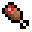 | 盐瓶+胡萝卜+南瓜+马铃薯+碗 | ||||||||||||||||||||||||||||||||||||||||||||||
| 缤纷菜蔬 (Colorful Vegetable) 跳跃提升 00:30 | 生缤纷菜蔬 | ||||||||||||||||||||||||||||||||||||||||||||||
| 生土豆排骨 (Raw Braised Pork with Potato) | 盐瓶+胡萝卜+生猪排+马铃薯+碗 | ||||||||||||||||||||||||||||||||||||||||||||||
| 土豆排骨 (Braised Pork with Potato) 力量 00:30 | 生土豆排骨 | ||||||||||||||||||||||||||||||||||||||||||||||
| 生土豆牛肉 (Raw Braised Beef with Potato) | 盐瓶+胡萝卜+生牛肉+马铃薯+碗 | ||||||||||||||||||||||||||||||||||||||||||||||
| 土豆牛肉 (Braised Beef with Potato) 力量 00:30 | 生土豆牛肉 | ||||||||||||||||||||||||||||||||||||||||||||||
| 生兔肉煲 (Raw Rabbit Stew) | 盐瓶+胡萝卜+生兔肉+马铃薯+碗 | ||||||||||||||||||||||||||||||||||||||||||||||
| 兔肉煲 (Rabbit Stew) 力量 00:30 原兔肉煲的配方已被移除。 | 生兔肉煲 |
| 拔丝苹果 (Toffee Apple) | 速度 30秒 糖+苹果 |
| 饺子 (Dumpling) | 熟猪排/牛排+小麦 |
4
| 肉松面包 (Meat Floss Bread) | 速度 00:30 盐瓶+小麦+熟鸡肉/熟鹦鹉肉 |
| 煮鸡蛋 (Boiled Egg) | 鸡蛋 |
| 烤胡萝卜 (Baked Carrot) | 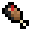 胡萝卜 |
| 番茄酱 (Ketchup) | 西红柿+糖+盐瓶 |
| 奶酪 (Cheese) | 牛奶桶+柠檬 |
| 烤鸡 (Christmas Roast Chicken) | 柠檬+熟鸡肉/熟鹦鹉肉+烤马铃薯 |
| 炸鱼薯条 (Fish and Chips) | 速度 00:30 盐瓶+熟鳕鱼+烤马铃薯+番茄酱+碗 |
| 汉堡 (Burger) | 番茄酱+奶酪+西红柿+牛排+面包 |
| 披萨 (Pizza) | 番茄酱+奶酪+西红柿+熟猪排+小麦 |
4
| 寿司 (Sushi) | 干海带+小麦+生鲑鱼 |
| 仰望星空派 (Stargazy Pie) | 熟鳕鱼+熟猪排+棕色蘑菇+小麦 |
| 葡萄干 (Raisin) | 速度 00:10 葡萄/金葡萄 |
| 冷饮 (Cold Drink) | 饱和IV 回复5点魔力值 水瓶+水果 |
| |
水果 (Fruits)
水果树下会随机长出除香橼外的所有水果，破坏相邻的树叶即可掉落。香橼可通过击杀森林蝙蝠得到。
药水
通过酿造稀有掉落物和粗制的药水，可以得到各种药水。部分支持喷溅、滞留、延长、加强版的酿造。连环效果无对应的喷溅、滞留版本。
| 药水名称 | 材料 | 效果 | 延长版 | 加强版 | |
|---|---|---|---|---|---|
| 天空药水 (Potion of Sky) | 天空之翼 | 速度 3:00 缓降 1:30 |
速度 8:00 缓降 4:00 |
速度II 1:30 缓降 1:30 |
|
| 海洋药水 (Potion of Ocean) | 水晶之心 | 水下呼吸 3:00 潮涌能量 1:30 |
水下呼吸 8:00 潮涌能量 4:00 |
- | |
| 山脉药水 (Potion of Ridge) | 山脉之肢 | 力量 3:00 夜视 3:00 |
力量 8:00 夜视 8:00 |
力量II 1:30 夜视 3:00 |
|
| 泥土药水 (Potion of Dirt) | 泥土之魂 | 隐身 3:00 连环 3:00 |
隐身 8:00 连环 8:00 |
- | |
| 大地药水 (Potion of Earth) | 大地之证 | 跳跃提升 3:00 急迫 3:00 |
跳跃提升 8:00 急迫 8:00 |
跳跃提升II 1:30 急迫II 1:30 |
|
| 火焰药水 (Potion of Fire) | 火焰之星 | 防火 3:00 抗性提升 3:00 |
防火 8:00 抗性提升 8:00 |
- | |
| 生命药水 (Potion of Life) | 生命之灵 | 生命恢复 0:45 瞬间治疗 |
生命恢复 1:30 瞬间治疗 |
生命恢复II 0:22 瞬间治疗II |
|
植物
花草
新增20种花草，在合成器中合成为3个对应种子。种子在土质方块上种植，一共4个生长阶段，成熟后收割可获得相应花草，否则只能获得种子。作物不受时运影响，可用骨粉催熟。每个花草都对应一个实体，大面积种植可能会卡顿。
收获成熟的小麦、胡萝卜、马铃薯和甜菜根有5%几率获得六种花草种子，其余花草种子可以通过杂交得到：当一种作物将要生长成熟时，若邻近的花草可杂交，则有5%几率变异为其它花草。
可在熔炉熔炼成其它物品，还可用于合成迷之炖菜，效果见下表。
| 产物 | 材料 | 合成配方 |
|---|---|---|
| 迷之炖菜 | 红色蘑菇+棕色蘑菇+碗+花草 |
| 种子与作物 | 名称 | 收割/杂交来源 | 熔炼得到物品 | 状态效果 | 持续时间 |
|---|---|---|---|---|---|
| 彼岸花 (Lycoris Radiata) | 小麦、甜菜根 | 红色染料 | 力量 | 5s | |
| 白车轴 (Trifolium) | 小麦、马铃薯 | 白色染料 | 挖掘疲劳 | 5s | |
| 黑荆棘 (Blackthorn) | 甜菜根、胡萝卜 | 黑色染料 | 凋零 | 5s | |
| 香蒲草 (Cattail) | 甜菜根、马铃薯 | 黄色染料 | 隐身 | 5s | |
| 金盏花 (Marigold) | 胡萝卜、马铃薯 | 橙色染料 | 急迫 | 5s | |
| 木槿花 (Hibiscus) | 小麦、胡萝卜 | 粉红色染料 | 虚弱 | 5s | |
| 风信子 (Hyacinth) | 彼岸花+黑荆棘 | 蓝色染料 | 跳跃提升 | 5s | |
| 菖蒲草 (Calamus) | 彼岸花+风信子 | 紫色染料 | 反胃 | 5s | |
| 滇百合 (Wild Lilium) | 香蒲草+金盏花 | 黄绿色染料 | 中毒 | 5s | |
| 紫荆花 (Bauhinia) | 木槿花+菖蒲草 | 品红色染料 | 饱和 | 5s | |
| 蓬蓬草 (Fluffy Grass) | 白车轴+香蒲草 | 羽毛 | 漂浮 | 5s | |
| 大丁草 (Gerbera) | 黑荆棘+香蒲草 | 火药 | 失明 | 5s | |
| 芦苇草 (Esparto) | 白车轴+风信子 | 线 | 速度 | 5s | |
| 亮连翘 (Glow Forsythia) | 香蒲草+风信子 | 荧石粉 | 发光 | 5s | |
| 碎璃草 (Glazed Shade) | 滇百合+紫荆花 | 海晶碎片 | 水下呼吸 | 5s | |
| 狼毒花 (Stelera) | 彼岸花+菖蒲草 | 蜘蛛眼 | 中毒 | 5s | |
| 牧晶花 (Forage Crystal) | 白车轴+滇百合 | 恶魂之泪 | 生命恢复 | 5s | |
| 异绒兰 (Isorchid) | 彼岸花+紫荆花 | 末影珍珠 | 抗性提升 | 5s | |
| 焰光菊 (Burning Chrysanthe) | 香蒲草+滇百合 | 烈焰粉 | 防火 | 5s | |
| 酢浆草 (Oxalis) | 菖蒲草+紫荆花 | 粘液球 | 缓慢 | 5s |
圣诞花 (Poinsettia)
| 产物 | 材料 | 合成配方 |
|---|---|---|
| 圣诞花 | 虞美人+彼岸花+金盏花+碎璃草 |
圣诞树 (Christmas Tree)
| 产物 | 材料 | 合成配方 |
|---|---|---|
| 圣诞树 | 荧石粉+雪球+圣诞花+云杉树苗 |
水果树树苗 (Fruit Sapling)
水果树树苗种下并长大后，每隔一段时间会长出一个水果，破坏附着的树叶即可掉落。只有下方为空气的树叶下方才能长出。
可用骨粉催熟。树叶转化平均需要1600秒，受时间调节器影响。每个树叶都对应一个实体，大面积种植可能会卡顿。
矿石树树苗 (Ore Sapling)
矿石树树苗种下并长大后，每隔一段时间树叶会转化为一种矿石。
羊毛树树苗 (Wool Sapling)
破坏树叶掉落羊毛树树苗、羊毛、鱼或羊。
仪式
魔杖配方中的两种材料位置可互换。
| 产物 | 材料 | 合成配方 |
|---|---|---|
| 封印之杖 (Sealing Wand) 魔法等级: 1 | 附魔铁锭+附魔金锭+木棍 | |
| 星之杖 (Star Wand) 魔法等级: 2 | 月之碎片+日之碎片+封印之杖 | |
| 梦之杖 (Dream Wand) 魔法等级: 3 | 下界之星+龙蛋+星之杖 | |
| 节制器 (Temperancer) 右击可开启/关闭。 | 石头+附魔之瓶 |
黑暗之杖 (Wand of the Darkness)
将烈焰棒重命名为任意名称，然后扔入岩浆即可得到黑暗魔杖，名称越中二法力越强。
扫帚 (Broom)
手持可提供漂浮效果，可按住shift下降。Tia Fraere!
| 名称 | 材料 | 合成配方 |
|---|---|---|
| 扫帚 | 烟花火箭+木棍+干草块 |
流星丸 (Shooting Star)
装备在胸甲可提供悬浮效果。若玩家未开启节制器，会自动向前飞行。可按住shift下降直至着陆。
| 名称 | 材料 | 合成配方 |
|---|---|---|
| 流星丸 | 天空之翼+鞘翅+扫帚 |
魔导石 (Sorcerer Stone)
玩家出生点附近自然生成，无法手动破坏，无掉落。
可令32米内的玩家每秒回复1点魔法值，上限30点。
魔法仪式
在地面摆出如下形状，然后在青金石上方放置发射器，并在发射器上方放置物品展示框。将材料放入发射器，将待处理的物品放入物品展示框，使用魔杖右击并等待即可。
附魔书制作
- 魔杖等级：至少1级
- 附加物：书
- 时长：60秒
- 消耗材料：青金石+附魔之瓶+稀有掉落物/下界之星
16 16 16 16
可制作除诅咒外的32种魔咒(不含弩魔咒)的最高等级附魔书。每种消耗品对应四种魔咒，该对应关系在模组首次载入时被决定。
效果附加
- 魔杖等级：至少2级
- 附加物：任意物品
- 时长：60秒
- 消耗材料：高级药水+附魔之瓶+稀有掉落物/下界之星
16 16 16 16
| 状态效果 | 所需药水 | 附加物 |
|---|---|---|
| 速度 | 迅捷药水 (速度II 8:00) | 靴子 |
| 跳跃提升 | 跳跃药水 (跳跃提升II 8:00) | 靴子 |
| 急迫 | 急迫药水 (急迫II 8:00) | 手持物 |
| 力量 | 力量药水 (力量II 8:00) | 手持物 |
| 再生 | 再生药水 (生命恢复II 1:30) | 盔甲 |
| 抗性提升 | 抗性药水 (抗性提升II 8:00) | 盔甲 |
| 防火 | 抗火药水 (防火 16:00) | 盔甲 |
| 隐身 | 隐身药水 (隐身 16:00) | 盔甲 |
| 水下呼吸 | 水肺药水 (水下呼吸 16:00) | 头盔 |
| 夜视 | 夜视药水 (夜视 16:00) | 头盔 |
| 饱和 | 冷饮 (饱和 IV) | 头盔 |
| 缓落 | 缓降药水 (缓降 8:00) | 靴子 |
| 潮涌能量 | 潮汐药水 (潮涌能量 8:00) | 头盔 |
| 连锁 | 连环药水 (连锁 8:00) | 斧、镐、锹 |
每件物品只可附加一种效果。效果可重复附加，之前的效果将会被覆盖。
盔甲效果在对应槽位生效，剑和工具在主手生效，每秒消耗1点经验值，重复的效果不会叠加但消耗的经验值会叠加。使用节制器可开启/关闭所有效果。连锁效果无消耗。
连锁效果下，使用斧可以破坏相连的木头、瓜和作物；镐可以破坏相连的矿物和黑曜石；锹可以破坏相连的沙子、红沙、砂砾、粘土块。受附魔影响，工具不会损坏，至少会保留1点耐久。
属性附加
- 魔杖等级：至少3级
- 附加物：书
- 时长：60秒
- 消耗材料：金锭+附魔之瓶+稀有掉落物/下界之星
16 16 16 16
剑(木制除外)、斧(木制除外)、三叉戟可附加属性：
- 攻击速度在原有武器基础上 +0~2 (=显示的速度+空手速度4.0)
- 攻击伤害在原有武器基础上 +0~8 (覆盖锋利效果)
- 速度 0.1+0.005~0.015 (50%几率)
- 幸运 +0.5~2 (50%几率)
盔甲可附加属性：
- 最大生命值 20+0~5
- 幸运 +0.5~2.5 (50%几率)
- 抗击退 +0.1~0.3 (50%几率)
- 速度 0.1+0.005~0.020 (50%几率)
属性可重新附加，之前的属性将会被覆盖。
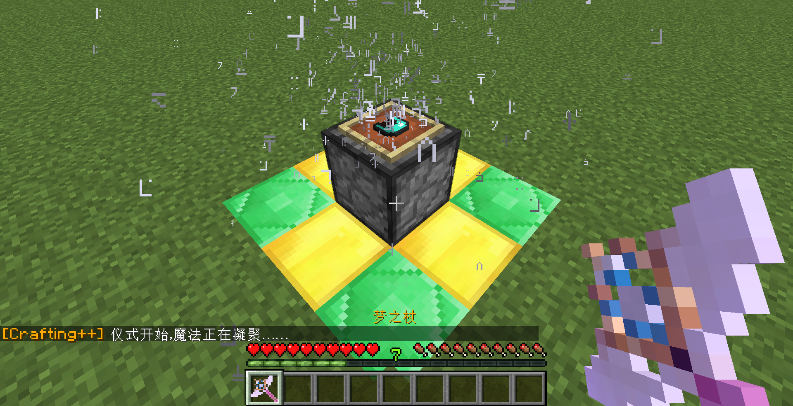 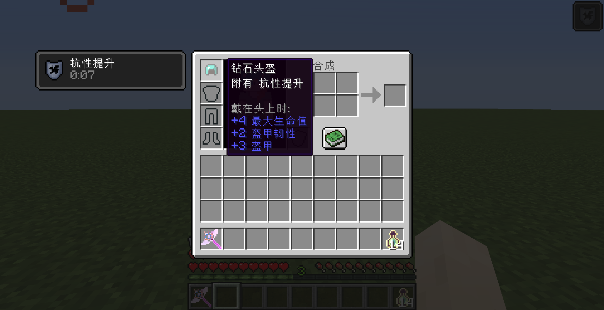
黑暗仪式
在地面摆出如下形状，然后在基岩上方放置发射器，并在发射器上方放置物品展示框。将材料放入发射器，将待处理的物品放入物品展示框，使用黑暗魔杖右击并等待即可。
黑暗召唤
仪式完成后，破损刷怪箱将会变成刷怪箱。
魔法
若要使用魔法，玩家需要副手持有魔杖，此时会显示技能菜单和魔法值。通过滚动鼠标滑轮来选择相应魔法，然后按下F键发动。玩家需要拥有足够的魔法值。
| 魔法 | 效果 | 范围/时长 | 魔杖等级 | 魔法值 | |
|---|---|---|---|---|---|
| 召唤术：风 | 将前方一定范围内实体吹向空中并掉落 | 半径2米 | 1级 | 10 | |
| 半径3米 | 2级 | ||||
| 半径5米 | 3级 | ||||
| 召唤术：火 | 在前方地面(32米内)召唤火焰 | 1米×3米×1米 | 1级 | 10 | |
| 3米×3米×3米 | 2级 | ||||
| 5米×3米×5米 | 3级 | ||||
| 召唤术：雷 | 召唤闪电 | 1道 | 1级 | 20 | |
| 5道 | 2级 | ||||
| 9道 | 3级 | ||||
| 召唤术：雨 | 召唤雨 | 5分钟雨 | 1级 | 10 | |
| 10分钟雨 | 2级 | ||||
| 15分钟雷雨 | 3级 | ||||
| 召唤术：灵 | 将前方实体石化(32米内) | 10秒 | 1级 | 5 | |
| 15秒 | 2级 | ||||
| 20秒 | 3级 | ||||
| 催化术：风 | 让玩家获得悬浮效果 | 60秒 | 1级 | 5 | |
| 90秒 | 2级 | ||||
| 120秒 | 3级 | ||||
| 催化术：火 | 将附近的熔炉全部点燃，使其可烧炼物品 | 3米内，320秒 | 1级 | 10 | |
| 7米内，640秒 | 2级 | ||||
| 11米内，960秒 | 3级 | ||||
| 催化术：雷 | 恢复玩家生命 | 4点 | 1级 | 10 | |
| 8点 | 2级 | ||||
| 16点 | 3级 | ||||
| 催化术：雨 | 清除附近的火，并将熔岩变成黑曜石 | 11米×11米 | 1级 | 10 | |
| 15米×15米 | 2级 | ||||
| 21米×21米 | 3级 | ||||
| 催化术：灵 | 将附近的作物催熟 | 1米×1米 | 1级 | 5 | |
| 3米×3米 | 2级 | ||||
| 5米×5米 | 3级 | ||||
| 催化术：地 | 在前方地表召唤裂缝 | 3米 | 1级 | 10 | |
| 5米 | 2级 | ||||
| 7米 | 3级 | ||||
装饰
称号
玩家手持绿宝石并根据下表的数字输入 /trigger title set 数值 即可消耗绿宝石并获得相应称号。
| + | 1 | 2 | 3 | 4 | 5 | 6 | 7 | 8 | 9 | 10 |
|---|---|---|---|---|---|---|---|---|---|---|
| 0 | 傲视群雄 | 八面威风 | 闭月羞花 | 冰肌玉骨 | 冰清玉洁 | 绰约多姿 | 超凡入圣 | 超凡脱俗 | 沉鱼落雁 | 齿白唇红 |
| 10 | 出类拔萃 | 出神入化 | 出水芙蓉 | 打酱油的 | 大家闺秀 | 淡妆浓抹 | 道貌岸然 | 登峰造极 | 登堂入室 | 婀娜多姿 |
| 20 | 二八佳人 | 返璞归真 | 粉白黛黑 | 风度翩翩 | 蜂目豺声 | 傅粉何郎 | 傅粉施朱 | 盖世无双 | 刚正不阿 | 高风亮节 |
| 30 | 姑射神人 | 怪模怪样 | 国色天香 | 撼天动地 | 鹤发童颜 | 鹤立鸡群 | 虎背熊腰 | 花容月貌 | 环肥燕瘦 | 技冠群雄 |
| 40 | 娇小玲珑 | 惊世骇俗 | 举世无双 | 绝代佳人 | 空前绝后 | 梨花带雨 | 林下风气 | 伶牙俐齿 | 凌波仙子 | 炉火纯青 |
| 50 | 眉目如画 | 眉清目秀 | 美如冠玉 | 靡颜腻理 | 明眸皓齿 | 齐天大圣 | 千娇百媚 | 螓首蛾眉 | 倾城倾国 | 容光焕发 |
| 60 | 融会贯通 | 如花似玉 | 身材魁梧 | 深不可测 | 深藏不露 | 神功盖世 | 神乎其技 | 世外仙人 | 双瞳剪水 | 松形鹤骨 |
| 70 | 所向披靡 | 天人合一 | 铁齿铜牙 | 亭亭玉立 | 头童齿豁 | 威镇寰宇 | 稳如老狗 | 无与伦比 | 雾鬓风鬟 | 仙风道骨 |
| 80 | 仙姿佚貌 | 小家碧玉 | 小巧玲珑 | 心领神会 | 秀色可餐 | 秀外惠中 | 夭桃秾李 | 一表非凡 | 一表人才 | 一代宗师 |
| 90 | 一笑千金 | 一笑倾城 | 衣冠楚楚 | 仪态万方 | 玉树临风 | 月里嫦娥 | 张牙舞爪 | 震古铄今 | 掷果潘安 | 朱唇皓齿 |
皮革盔甲染色 (Dyed Leather Armors)
使用黑色染料可将盔甲颜色变为纯黑色#000000，使用红色染料/绿色染料/蓝色染料可将其红色/绿色/蓝色分别加深1个单位，即RGB值增加#010000/#000100/#000001，可以一次增加多个相同染料。
| 产物 | 材料 | 合成配方 |
|---|---|---|
| 皮革盔甲(纯黑色) 皮革盔甲(加深红色) 皮革盔甲(加深绿色) 皮革盔甲(加深蓝色) | 皮革盔甲+黑色染料 皮革盔甲+红色染料 皮革盔甲+绿色染料 皮革盔甲+蓝色染料 |
2 |
烈焰红唇 (Red Lip)
烈焰红唇可以通过各种染料在工作台中染色，也可以在合成器中像皮革盔甲一样染色。佩戴后取下需要放在合成器中修复，方可重新染色、佩戴。
| 名称 | 材料 | 合成配方 |
|---|---|---|
| 烈焰红唇 | 红石粉+岩浆膏 |
| 名称 | 材料 | 合成配方 |
|---|---|---|
| 紫色美瞳 (Purple Eye) 帮助寻找花草丛。 |
紫色染料+末影之眼 | |
| 假睫毛 (Lash) | 羽毛+末影之眼 | |
| 猫胡子 (Cat Breed) | 羽毛+木棍 | |
| 花环 (Garland) 每10秒回复1点魔力值，上限30点。 |
虞美人+蒲公英+木棍 | |
| 黑框眼镜 (Black Framed Glasses) | 黑色染料+木棍+玻璃板 | |
| 橙框眼镜 (Orange Framed Glasses) | 橙色染料+木棍+玻璃板 | |
| 愚弄眼镜 (Joking Glasses) | 羽毛+木棍+玻璃板 | |
| 小黄人眼罩 (Minion Goggles) | 玻璃板+末影之眼 | |
| 胖次 (Pants) 100% cotton! |
淡蓝色羊毛+白色羊毛 | |
| 冕旒 (Empire Hat) 每10秒回复1点魔力值，上限100点。 |
黄色染料+末影珍珠+黄色床 | |
| 玻璃头盔 (Glass Helmet) 不在水中时: 水下呼吸(00:05) |
玻璃 | |
| 荧光帽 (Glow Hat) 发光(00:05) |
荧石粉 | |
| 原谅帽 (Green Hat) 每10秒回复1点魔力值，上限60点。 |
绿宝石 | |
| 非酋帽 (Black Hat) -1 幸运 |
煤炭 | |
| 护士帽 (Nurse Hat) +1 幸运 |
石英 | |
皮夹克 (Jacket) |
棕色染料+皮革 | |
| 红色外套 (Red Coat) |
红色染料+皮革 | |
| 紧身皮裤 (Tight Leather Leggings) |
煤炭+皮革 | |
| 牛仔裤 (Blue Jeans) |
蓝色染料+皮革 | |
| 雪地靴 (Snow Boots) 在雪地时: 水下呼吸(00:05) |
皮革+棕色染料 |
经典画作 (Classical Painting)
放置后，右键可按次序切换图案。包括： 无名女郎、罗纳河上的星空、蒙娜丽莎、梦、日出印象、 舞蹈教室、吹笛少年、塔希提岛的牧歌、劳动归来、春光、 吻、红磨坊舞会、松树林之晨、画家母亲肖像、暴风雨、 意外归来、缠毛线、玩牌者、马克思与恩格斯、自由引导人民、 拾穗、带珍珠耳环的少女、呐喊、向日葵、苏格拉底之死、 金色的秋天、星月夜、最后的晚餐、开国大典、落霞孤鹜图、 竹石图、寒江独钓图、松梅双鹤图。
| 名称 | 材料 | 合成配方 |
|---|---|---|
| 经典画作 | 羽毛+黑色染料+画 |
新春装饰 (Spring Festival Decorations)
放置后，右键可按次序切换图案。包括
日出江花红胜火 春来江水绿如蓝
爆竹声声辞旧岁 春联户户迎新春
一年四季行好运 八方财宝进家门
迎新春吉祥如意 贺佳节富贵平安
旧岁又添几个喜 新年更上一层楼
绿竹别其三分景 红梅正报万家春
天增岁月人增寿 春满乾坤福满楼
喜居宝地千年旺 福照家门万事兴
鸟语花香 万象更新
四季平安 国泰民安
辞旧迎新 春回大地
四季长安 喜迎新春
春 福 五谷丰登 六畜兴旺
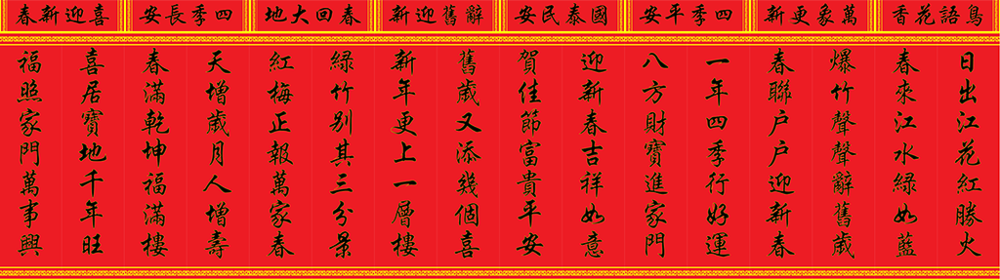
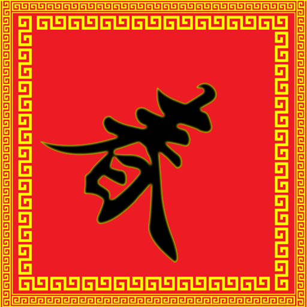
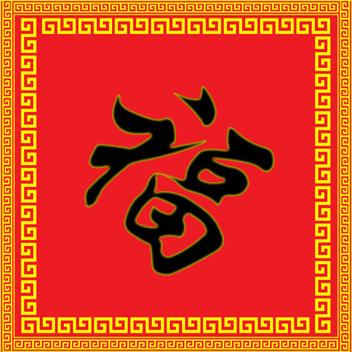
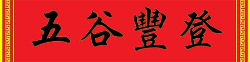
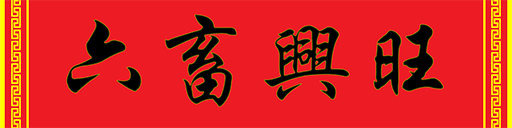
| 名称 | 材料 | 合成配方 |
|---|---|---|
| 新春装饰 | 羽毛+黑色染料+红色染料+纸 |
纸片人 (Character)
对床shift右键即可使用，共27种样式。从圣诞老人村民处购买圣诞礼物有几率得到。包括：樱之宫莓香、日向夏帆、星川麻冬、天野美雨、神崎日照、鹿目圆香、晓美焰、美树沙耶香、巴麻美、佐仓杏子、篝敦子、洛蒂·杨森、苏西·曼芭芭拉、夏莉欧·杜诺尔、春风DoReMi、藤原羽月、妹尾爱子、木之本樱、小起、宫永咲、原村和、片冈优希、染谷真子、竹井久、龙门渕透华、天江衣、福路美穗子。
彩色告示牌 (Colorful Sign)
| 名称 | 材料 | 合成配方 |
|---|---|---|
| 彩色告示牌 | 告示牌+染料 | |
| 玻璃告示牌 | 告示牌+玻璃板 |

玻璃物品展示框 (Glass Item Frame)
现在物品展示框材质默认为玻璃材质，放入物品后边框会消失。
| 名称 | 材料 | 合成配方 |
|---|---|---|
| 玻璃物品展示框 | 木棍+玻璃板 |
楼梯 (Stairs)
新增17种楼梯回收为原方块。现在可使用切石机切割木板制作楼梯。
| 名称 | 材料 | 合成配方 |
|---|---|---|
| 相应方块 | 任意楼梯 | 4 |
台阶 (Slabs)
新增18种台阶回收为原方块。现在可使用切石机切割木板制作台阶。
| 名称 | 材料 | 合成配方 |
|---|---|---|
| 相应方块 | 任意台阶 |
实用
炼药锅
将下列物品扔进炼药锅可将其变为另一物品，并减少炼药锅一级水位。
可以一次性扔入多个物品。
| 名称 | 材料 | 配方 |
|---|---|---|
| 玻璃 | 染色玻璃 | |
| 陶瓦 | 染色陶瓦 | |
| 白色羊毛 | 彩色羊毛 | |
| 白色床 | 彩色床 | |
| 湿海绵 | 海绵 | |
| 黑曜石 | 熔岩桶(桶会返还) | |
| 活塞 | 粘性活塞 |
树叶快速腐烂
现在树上的树叶没有邻近的木头时，会迅速腐烂。
黑曜石防凋灵
现在凋灵无法破坏黑曜石。
随机方块
副手持有潜影箱而主手为空时，将会从潜影箱随机选择一个给予玩家。
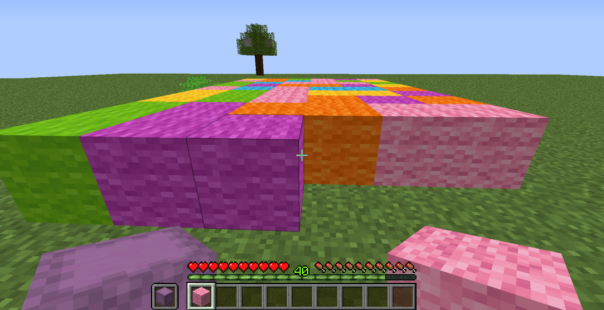
箱子整理
当玩家主手/副手持有木棍右击箱子/潜影箱后，箱子内的物品会按照物品id的长度/物品数量从小到大排序。该操作不会合并同名的物品。
自动种植
当发射器发射的物品可以种植在前方位置时，会自动种植。支持本模组的树苗和花草。
| 位置 | 作物 |
|---|---|
| 泥土等上方 | 树苗 |
| 耕地上方 | 小麦种子、甜菜种子、南瓜种子、西瓜种子、胡萝卜、马铃薯 |
| 灵魂沙上方 | 地狱疣 |
| 末地石上方 | 紫颂花 |
| 灰化土、菌丝上方 | 蘑菇 |
| 丛林木侧面 | 可可豆 |
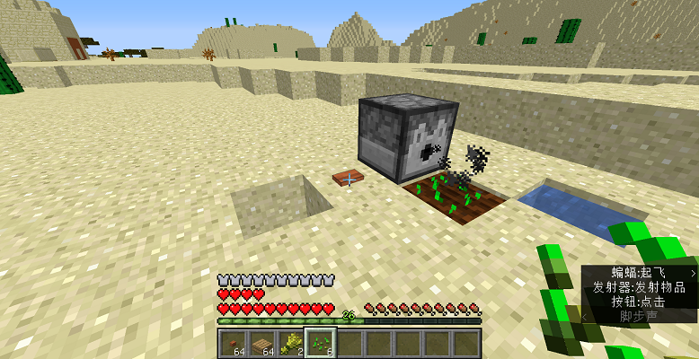
竖纹方块
部分方块双台阶材质修改为竖纹。

竖台阶
墙名称和模型均修改为竖台阶。
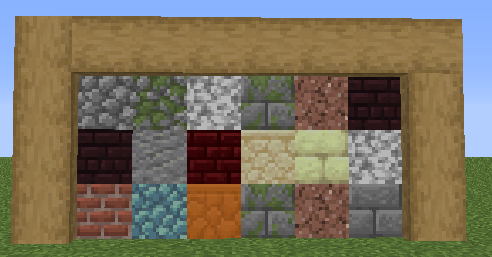
干燥湿海绵
湿海绵在下界可直接被干燥为海绵。
交易
新增了8种村民。调整制图师为可出售所有结构的地图，使用月之碎片购买，在下界/末地可以购买下界要塞/末地城地图(必须有相应结构才可)。

| 职业 | 层级 | 买 | 卖 | |
|---|---|---|---|---|
| 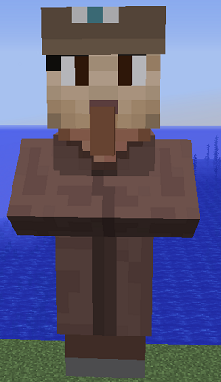 | 林业员 | 1 | 36-40 橡木 | 绿宝石 |
| 36-40 云杉木 | 绿宝石 | |||
| 36-40 白桦木 | 绿宝石 | |||
| 36-40 丛林木 | 绿宝石 | |||
| 36-40 金合欢木 | 绿宝石 | |||
| 36-40 深色橡木 | 绿宝石 | |||
| 2 | 2-4 绿宝石 | 橡树树苗 | ||
| 2-4 绿宝石 | 云杉树苗 | |||
| 2-4 绿宝石 | 白桦树苗 | |||
| 2-4 绿宝石 | 丛林树苗 | |||
| 2-4 绿宝石 | 金合欢树苗 | |||
| 2-4 绿宝石 | 深色橡木树苗 | |||
| 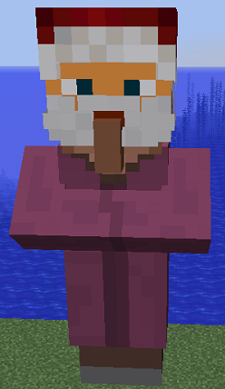 | 圣诞老人 | - | 皮革靴子+月之碎片 | 圣诞礼物 |
 | 药剂师 | 1 | 15-19 地狱疣 | 绿宝石 |
| 15-19 蜘蛛眼 | 绿宝石 | |||
| 36-40 烈焰粉 | 绿宝石 | |||
| 36-40 粘液球 | 绿宝石 | |||
| 2 | 3-11 绿宝石 | 随机药水 | ||
| 3-11 绿宝石 | 随机喷溅药水 | |||
 | 末地使 | 1 | 15-19 紫颂果 | 绿宝石 |
| 14-16 末影珍珠 | 绿宝石 | |||
| 2 | 16-20 绿宝石 | 潜影箱 | ||
 | 烟花师 | 1 | 24-36 纸 | 绿宝石 |
| 36-40 火药 | 绿宝石 | |||
| 2 | 1 绿宝石 | 3-5烟花火箭 (为双层球状，颜色随机) | ||
| 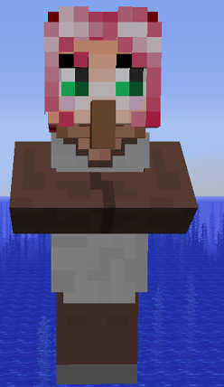 | 园丁 | 1 | 36-40 骨粉 | 绿宝石 |
| 2 | 3-5 绿宝石 | 红色郁金香 | ||
| 3-5 绿宝石 | 橙色郁金香 | |||
| 3-5 绿宝石 | 白色郁金香 | |||
| 3-5 绿宝石 | 粉色郁金香 | |||
| 3-11 绿宝石 | 向日葵 | |||
| 3-11 绿宝石 | 丁香 | |||
| 3-11 绿宝石 | 玫瑰丛 | |||
| 3-11 绿宝石 | 牡丹 | |||
| 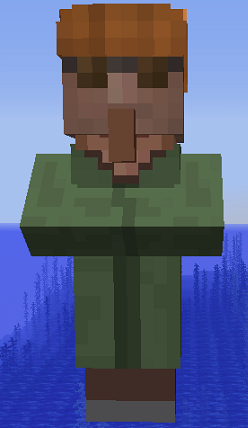 | 机械工 | 1 | 16-24 红石 | 绿宝石 |
| 36-40 箭 | 绿宝石 | |||
| 15-20 线 | 绿宝石 | |||
| 2 | 4-6 绿宝石 | 活塞 | ||
| 4-6 绿宝石 | 红石灯 | |||
| 4-6 绿宝石 | TNT | |||
| 4-6 绿宝石 | 侦测器 | |||
| 4-6 绿宝石 | 投掷器 | |||
| 4-6 绿宝石 | 发射器 | |||
 | 潜水员 | 1 | 30-38 海草 | 绿宝石 |
| 30-38 海带 | 绿宝石 | |||
| 36-40 海晶砂粒 | 绿宝石 | |||
| 2 | 鳕鱼+12-20 绿宝石 | 鳕鱼桶 | ||
| 三文鱼+12-20 绿宝石 | 三文鱼桶 | |||
| 热带鱼+12-20 绿宝石 | 热带鱼桶 | |||
| 河鲀+12-20 绿宝石 | 河鲀桶 | |||
空域开端
该数据包仅在出生点y=0处无基岩情形下启用，玩家可由自定义超平坦如minecraft:air;minecraft:mountains;进入。
若要在非空岛模式下开启该模块，依次输入scoreboard players set #load_block_sky_domain cppValue 1和/datapack enable "file/block_sky_domain"
若要在空岛模式下关闭该模块，依次输入scoreboard players set #load_block_sky_domain cppValue 0和/datapack disable "file/block_sky_domain"
该数据包旨在为空岛玩家提供从泥土到末地的完整科技链。加载后会在海平面高度生成一块基岩和一个箱子，箱子内包含1泥土、1橡树树苗、16骨粉。
玩家破坏树叶、草丛、枯萎的灌木、海草会掉落下述物品。
| 树叶 | 草丛 | 枯萎的灌木 | 海草 | ||||||||||||||||
|---|---|---|---|---|---|---|---|---|---|---|---|---|---|---|---|---|---|---|---|
| 方块 | |||||||||||||||||||
| 掉落物 | |||||||||||||||||||
| 10% 线 | 10% 骨粉 | 通常 树苗 | 通常 木棍 | 通常 苹果 | 10% 小麦种子 | 5% 甜菜种子 | 5% 南瓜种子 | 5% 西瓜种子 | 5% 胡萝卜 | 5% 马铃薯 | 5% 甜浆果 | 20% 1~2 木棍 | 10% 仙人掌 | 10% 甘蔗 | 10% 棕色蘑菇 | 10% 红色蘑菇 | 10% 可可豆 | 5% 海带 | |
在熔炉上方放置雪块可将其变成方块破坏器，之后在其上方放置泥土/砂砾/圆石/石头/沙子/灵魂沙，然后右击方块破坏器可以打碎该方块。掉落物如下：
| 泥土 | 灵魂沙 | |||||||||||||||
|---|---|---|---|---|---|---|---|---|---|---|---|---|---|---|---|---|
| 方块 | ||||||||||||||||
| 掉落物 | ||||||||||||||||
| 32% 草丛 | 8% 橡树树苗 | 8% 云杉树苗 | 8% 白桦树苗 | 8% 丛林树苗 | 8% 金合欢树苗 | 8% 深色橡树树苗 | 2% 水果树树苗 | 2% 羊毛树树苗 | 2% 矿石树树苗 | 2% 竹子 | 40% 石英 | 20% 粘土 | 9% 地狱疣 | 5% 烈焰粉 | 1% 恶魂之泪 | |
| 圆石 | 石头 | 砂砾 | 沙子 | ||||||||||||||
|---|---|---|---|---|---|---|---|---|---|---|---|---|---|---|---|---|---|
| 方块 | |||||||||||||||||
| 掉落物 | |||||||||||||||||
| 沙子(方块) | 砂砾(方块) | 24% 燧石 | 24% 煤 | 24% 1~4铁粒 | 16% 1~4金粒 | 5% 石英 | 5% 青金石 | 1% 绿宝石 | 1% 钻石 | 32% 枯萎的灌木 | 24% 1~4铁粒 | 16% 1~4金粒 | 10% 骨粉 | 10% 红石 | 6% 火药 | 2% 烈焰粉 | |
方块破坏器下方的伸出的活塞臂收回时，会自动破坏方块破坏器上方的方块。
在方块破坏器上方放置炼药锅，然后向炼药锅扔入4个圆石或4个雪球，可以制作岩浆或水。
将12个绿宝石块摆成末地传送门框架的形状，然后在正中间放置雪块即可得到末地传送门框架。
玩家杀死生物时背包的沙子会变成灵魂沙。
合成表
| 产物 | 材料 | 合成配方 |
|---|---|---|
| 雪球 | 木棍+线 | |
| 泥土 | 雪球+树苗或小麦或甜菜或马铃薯或胡萝卜(任意组合) | |
| 圆石 | 泥土+雪球 | 8 |
| 泥土 | 圆石+雪球 | 8 |
| 鸡蛋 | 雪球+绿宝石 | 8 |
| 烈焰棒 | 烈焰粉+木棍 | |
| 草方块 | 草+泥土 |
进度
新增26项进度，完成进度会给予玩家经验、物品或状态效果。
| 图标 | 进度 | 游戏内描述 | 奖励 | 上游进度 | 内部ID |
|---|---|---|---|---|---|
| 开启模组！ | 感谢您的使用 | — | — | cpp:root | |
| 这是异变！ | 杀死一只异变生物 | — | 开启模组！ | cpp:dark_animal | |
| 搬运工 | 破坏一个刷怪箱 | — | 这是异变！ | cpp:transporter | |
| 成为马猴烧酒 | 魔杖可是标配 | 100点经验 | 提高姿势水平 | cpp:mahoushoujo | |
| 成为库洛缺德 | 黑暗权杖 | - | Release | cpp:dark_wand | |
| Release! | 星之杖 | 500点经验，若玩家无头盔或帽子，则会绑定小樱头。 | 成为马猴烧酒 | cpp:star_wand | |
| 膜法少女! | 梦之杖 | 500点经验 | 星之杖 | cpp:dream_wand | |
| 当然是选择原谅她啦！ | 戴上你的原谅帽 | — | 开启模组！ | cpp:forgive | |
| Tia Fraere! | 这能叫飞？ | — | 当然是选择原谅她啦！ | cpp:broom | |
| 喵 | 一起喵喵喵喵喵 | — | Tia Fraere! | cpp:meow | |
| 艺术家 | My name is Van | — | 喵 | cpp:artist | |
| 剪刀手·爱德华 | 要想富，少生孩子多种树 | — | 艺术家 | cpp:gardener | |
| 装完逼还想跑？ | 土著的愤怒 | 15秒的缓慢 | 开启模组！ | cpp:robber | |
| 战斗民族 | 打死一头熊 | — | 装完逼还想跑？ | cpp:fighter | |
| 海绵宝宝 | 我们去抓水母吧 | 章鱼哥 | 战斗民族 | cpp:sponge | |
| 闪灵 | 杀死卫道士 | 100点经验 | 海绵宝宝 | cpp:shining | |
| 不朽 | 肉山大魔王 | 100点经验 | 闪灵 | cpp:undead | |
| 已经没什么好害怕的了 | 学姐，你的头掉了 | 500点经验 | 不朽 | cpp:all_head | |
| 我是不是该减肥了？ | 体重翻倍了 | 500点经验 | 成为库洛缺德 | cpp:fat | |
| 人生经验 | 不在书里，而在瓶子里 | — | 开启模组！ | cpp:xp_bottle | |
| 没见过的掉落物 | 获得生物的稀有掉落物 | — | 人生经验 | cpp:drops | |
| 元素之力 | 使用它吧！ | — | 没见过的掉落物 | cpp:elements | |
| 呼风唤雨、驱雷掣电 | 调节天气 | — | 元素之力 | cpp:weather | |
| 红宝书 | 获得年长者之教诲 | — | 呼风唤雨、驱雷掣电 | cpp:red_book | |
| 白雪纷纷何所似 | 撒盐空中差可拟 | — | 红宝书 | cpp:salt | |
| 参数测定 | 使用多功能一体机熔炼矿石 | — | 白雪纷纷何所似 | cpp:arguments | |
| 叮当猫的口袋 | 八重……算了，两重吧 | — | 参数测定 | cpp:doraemon | |
| 心急吃不了热饭菜 | 醒醒，这不是寿司 | — | 叮当猫的口袋 | cpp:raw_meal | |
| 先有鸡还是先有蛋？ | 是先有蛋 | — | 开启模组！ | cpp:egg | |
| 僵尸博士的复仇 | 没有豌豆了，用你的剑吧 | — | 先有鸡还是先有蛋？ | cpp:zombie | |
| 生物培育 | 繁殖怪物？ | — | 僵尸博士的复仇 | cpp:mob_projector |